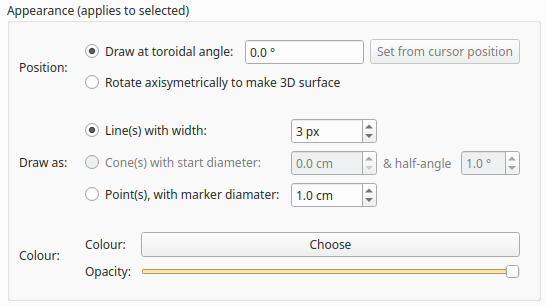

3D Viewer
The Calcam 3D viewer can be used for visualising machine CAD models, camera positions and fields-of-view, and for creating high quality figures. As with the other Calcam GUI tools, the window consists of the 3D view on the left of the window and controls on tabs to the right:

CAD Model Setup
At the top the Machine Model control tab are controls for loading a CAD model to calibrate against. Two dropdown boxes are provided to select the CAD model to load and the model variant. The Load button to the right of the model variant then loads the model. Underneath the model variant dropdown box is a checkbox labeled Enable default model features on load: if checked, the default parts of the CAD model are all loaded as soon as the model itself is loaded. If not checked, the model definition will be loaded but none of the 3D mesh data will be loaded, and instead you can turn on features individually. This is useful if working with a large model on a slow computer where you don’t want to wait for the whole model to load if not needed. You can change to a different CAD model or variant at any time by selecting a different item from the dropdown boxes and clicking Load again.
Turning CAD model parts On/Off
For CAD models composed of multiple parts in separate mesh files, individual mesh files can be turned on or off by ticking/unticking them in the Enable / Disable Features panel. This can be done for individual parts, groups of parts (if defined in the CAD model) or the entire model. This can be helpful to improve performance when working with large models if not all parts are necessary for a particular calibration, or for removing parts which are in the way and make the calibration more difficult.
CAD model appearance settings
The CAD model apprearance can be highly customised in order to create figures as desired. These options are in the Appearance box on the Machine Model control tab. This box contains controls to change the model appearance between solid body and wireframe / edges only. The colour of individual model feature(s) can also be changed by selecting the feature(s) in the Enable / Disable Features panel, and using the buttons in the Appearance box to change the part colour or reset it to the default value. You can also save the current colour configuration to be the default in the model definition by clicking Save current colours as default (whole model).
Loading additional 3D Meshes
In addition to loading a Calcam CAD model definition, it may be useful to import additional 3D meshes from external files to add to the visualisation. Currently this supports .obj or .stl format meshes.
To load an additional 3D mesh file, click the Load additional mesh file… button underneath the Enable / Disable Features list on the Machine Model tab. This will open a file browsing dialog to select a mesh file to load.
Once you have selected the file to load, a dialog box will open with settings about how to interpret the contents of the file. Calcam uses a right-handed cartesian coordinate system with vertical ‘up’ along the +Z axis and units in metres. This may not be the same convention used in mesh files you wish to load, so the settings dialog allows you to change:
Mesh file scale: the physical length represented by a length of 1 unit in the mesh file. For example if the mesh has been exported from CAD software in units of millimetres, this should be set to 0.001 m/unit to scale the model correctly.
Up direction: which direction in the mesh file corresponds to vertically upwards; this can be positive or negative in any of X, Y or Z. Use this if imported meshes appear rotated when loaded in to Calcam.
Coord system: whether the data in the mesh file uses a right- or left- handed cartesian coordinate system. Default is right-handed; change this if you know the mesh file is left-handed, or if the imported mesh data appears mirrored.
Rotate toroidally:use this to rotate the imported mesh about the z axis (i.e. toroidally) if required; can be set to values between -180 to +180 degrees.
After clicking OK to this dialog, the mesh file will be loaded and will appear as an additional top-level item in the Enable / Disable Features panel. It can be shown or hidden by toggling the checkbox to the left of the mesh file name (the name can also be edited by double clicking it). The colour to display the additional mesh can be chenged by selecting it in the CAD part list panel and using the same Choose… colour button as used for other CAD components. Note however that setting the CAD model display to wireframe or solid body does not affect additional mesh files loaded in this way, which will always be displayed as solid bodies.
To remove an additional mesh file from the Enable / Disable Features, select it and click the Remove selected additional mesh button underneath the Enable / Disable Features panel.
3D Viewport Setup
In addition to the mouse and keyboard controls, the 3D Viewport tab can be used to control the current view of the CAD model. It contains a number of tools in addition to just positioning and pointing the cuurent viewport which are described in the following sections.
At any time, the current viewport setup can be saved as a preset to the CAD model definition so it is easy to return to at any time. This can be done with the Save current view to model definition as preset box near the bottom of the 3D Viewport tab. Entering a name for the view in the Name box and then clicking Save will cause the current view to be added to the preset viewport list, and if the model definition file you are using is not read-only, will be saved to the model definition for future use.
Viewport Adjustment
In addition to using mouse and keyboard navigation, the current view of the CAD model can be adjusted with the controls in this tab.
In the Select pre-defined viewport box is a list of viewports defined in the CAD model definition. Clicking on a view in this pane immediately changes the CAD viewport to that view. In addition to views defined in the CAD model definition, there are two Auto Cross-Sections views which will position the camera and set cross-sectioning options to view the entire model, cut in cross-section through the origin.
You can also set the view to match a calibration by clicking the Add from calibration(s)… button below the viewport list. You can then select one or more Calcam calibration files to load, and the views defined by the calibration will be added to the viewport list on the 3D Viewport tab.
Underneath the list of pre-defined viewports are editable boxes showing the current viewport’s camera position, camera view target, field of view and roll. These update automatically to reflect the current viewport, or editing the values in these boxes will immediately adjust the view accordingly.
Below the viewport coordinate boxes is an option to switch the 3D projection between a perspective projection view of the model (i.e. a natural view where closer objects appear larger) and an orthographic view (where objects appear the same size regardless of their distance from the viewier). This can be helpful for making e.g. cross-section figures.
CAD Model Slicing
The 3D Viewport tab also contains options to display the machine CAD model as sliced or cross-sectioned, which can be used if making visualisations. These settings are considered part of the viewport setup, so will be saved and recalled if saving a viewport configuration, and are reset when selecting a preset view to load.
The options available for slicing the CAD Model are:
Slicing with vertical planes (i.e. to show the poloidal cross-section):
None: No slicing of the model
Show only toroidal angles: The model will only be visible between the given toroidal angles (\(\phi=\mathrm{tan}^{-1}(y/x)\)) and the rest will be hidden. Note that the order the angles are specified matters: entering \(0^\circ - 30^\circ\) will show the 1/12 of the machine between \(0^\circ - 30^\circ\), whereas entering \(30^\circ - 0^\circ\) will show the 11/12 of the machine except \(0^\circ - 30^\circ\) which will be hidden.
Slice with chord at…: This option can be used to slice the model with a vertical plane not passing through the origin. The normal of the slicing plane is a radial line at the given toroidal angle, and the plane is placed along that radius at the given major radius (note: this means this option can only be used to hide, at most, half of the model).
Note: Any calibration results, 3D data and extra mesh files loaded will not be affected by these slicing options.
Visualising calcam calibrations
Calcam calibration files can be loaded by the 3D viewer to visualise the camera sight-lines / fields of view on the 3D model. This is done on the Calibrations tab: click the Add… button to browse for a calibration file to load. The calibration will be added to the list at the top of the tab, and the tick-box next to the calibration name can be used to turn it on or off in the 3D view. To change the displayed name of a loaded calibration, single-click the calibration name in the list box to edit the name.
Visualisation options
With a loaded calibration in the list selected, at the bottom of the tab are options for how to visualise the calibrated field of view. There are 3 ways to display fields of view:
Shaded volume` (default) displays the sight-line cone of the camera as a semi-transparent volume.
Sight-line fan displays an array of lines representing the camera lines-of-sight.
CAD model shading shades the surface of the CAD model where it can be seen by the camera.
Note
Since the CAD model shading display option requires raycasting calculations at much higher resolution than the other two display options, when changing to this display option it may be relatively slow for the calculation to complete.
You can choose the colour the current calibration is displayed in using the Choose… button below thw visualisation options, and a slider at the bottom is used to adjust the transparency of the field of view display.
The names of the calibrations corresponding to each colour field-of-view visualisation can be displayed in a legend on the image by ticking the Show in legend box underneath the view list. By default this is automatically enabled if more than one calibration is loaded.
Displaying arbitrary 3D coordinate data
In addition to showing camera fields-of-view, additional arbitrary 3D points and lines can be added to the visualisation, e.g. representing other diagnostic sight-lines, trajectories, magnetic field lines, flux surfaces or other coordinates of interest. This is done by loading text files containing the coordinates to display on the 3D Data tab.
Formatting of data files
3D coordinate data to visualise can be loaded from ASCII files with .txt, .csv or .dat file extensions. The data can be in either cartesian (\(X,Y,Z\)), cylindrical (\(R,Z,\phi\)) or poloidal cross-section (\(R,Z\)) coordinates, with linear coordinates in metres and angle coordinates in either degrees or radians. When loading a file, a dialog box will be displayed allowing you to select which of these types of coordinates are in the file being loaded.
The data files can take one of two formats, depending on whether you want to display a single continuous line defined by a set of 3D points, a set of individual points, or a collection of individual disconnected straight line segments:
To display a single continuous line, and/or a set of points, the file should contain a list of points with each point’s coordinates on one line of the text file. Each line of the file must therefore contain 2 (for \(R,Z\)) or 3 (\(X,Y,Z\) or \(R,Z,\phi\))numbers, delimited with commas, spaces or tabs.
If you wish to display a set of disconnected straight line segments, each line of the file must contain the coordinates of 2 points: the start and end points of each line. The file will then contain as many text lines as line segments to display. Each line of the file will therefore contain 4 or 6 numbers (again all delimited with commas, spaces or tabs).
Loading and removing data
Click the Load from ASCII… button to browse for a text file to load. Once selected, a dialog box will appear confirming the number of points or line segments found in the file, and asking how to interpret the coordinates. For 2D \(R,Z\) data, it will also display an option to create a closed contour from the coordinates (this can be useful e.g. for a set of points tracing out a magnetic flux surface).
Once loaded, data sets are added to the list at the top of the tab, with names corresponding to the file name they were loaded from. Note that if the loaded CAD model definition contains a definition of the machine \(R,Z\) wall contour, this will automatically appear in the list of coordinate data which can be displayed. The display of each data set can be turned on and off using the checkboxes next to the dataset names. To edit the name of a data set, single click its name in the list.
Appearance Options
Once loaded, various options are available for how to display the 3D coordinates. These are displayed underneath the list of loaded coordinate data files on the 3D Data tab. These options are enabled by selecting the name of a set of 3D data from the list, if that set of data is currently being displayed (i.e. has the checkbox next to its name checked).
The screenshot below shows the available options, which are explained in the following sections.
“Position”
These options are only available for data which lie in a single poloidal plane, i.e. data defined in (\(R,Z\)) coordinates or (\(R,Z,\phi\)) if all values of \(\phi\) are identical. In this case, 2 options are available:
Draw at toroidal angle - this option allows the coordinates to be drawn at any toroidal angle of choice. This can be done either by entering the desired toroidal angle, or by clicking on the CAD model to place the 3D cursor and then clicking Set from cursor position to take the toroidal angle from the current cursor position.
Rotate axisymetrically to make 3D surface - this will join the coordinates in the dataset in to a line in the poloidal plane, then rotate that line about the z axis (i.e. rotate it toroidally) to form an axisymmetric 3D surface. An example use case for this might be to load an \(R,Z\) contour of a tokamak flux surface, then this option will allow rendering this as a volume of plasma for visualisation purposes.
“Draw as”
These options control how the coordinates are represented:
Line(s) - this option is available for all types of coordinates, and connects the coordinates with lines and renders them with a given thickness in pxels.
Cone(s) - this option is only available for coordinate data which represents one or more disconnected straight line segments (i.e. not for a set of >2 points forming a single path, see the above section on data file formatting). An example use case for this option is to show beam paths or lines-of-sight which have a finite volume. The cone display is parameterised by 2 quantities: a “start diameter” and half-angle. The “start-diameter” is the diameter at the narrow end of the cone. This can be 0 in which case the cone tapers to a point, or a finite size in which case the cone starts with a circular face of the given radius. The half-angle controls the tapering angle of each side of the cone. A value of 0 half angle and finite start diameter can be used to draw a cylinder.
Point(s) - this option is available for all types of coordinates, and displays a sphere with the given diameter at each of the loaded coordinates.
“Colour”
These options apply to all types of coordinate display listed above. They can be used to change the colour and opacity of the displayed coordinates.
Creating coordinate lists from the 3D cursor
As described above, pressing c on the keyboard while a 3D cursor is placed on the CAD (by left clicking) will add the current cursor coordinates to a list at the bottom of the 3D Data tab. This set of coordinates will also appear in the list of 3D data sets so the above options can be used to display them. These coordinates are treated as forming a single continuous line / set of points. The list of coordinates built up in this way can be exported to a .csv file by clicking the Save to CSV file… button below the coordinate list.
Rendering and saving images
The 3D viewer can be used to save high resolution PNG images using the controls on the Render / Save Image tab. At the top of this tab are the 3 main options for the types of image which can be saved:
Exporting the current view
If Current View is selected at the top of the Render / Save Image tab, the output image will exactly match what is currently displayed in the 3D view in the window. This can be used to prepare illustrative figures. By default the output image size in pixels will match the size of the window on the screen, however you can choose to render the output at higher resolution with the Output resolution dropdown box in the Render Settings box. Here you can also change the level of anti-aliasing to eliminate sharp edges in the rendered image, which is implemented by rendering the output at higher resolution than desired and then down-sampling again. You can also choose whether to use a black background, as in the display window, or to make any black areas of the image transparent in the output image. If there is a cursor placed in the current view, you can choose whether or not to show the cursor on the output image.
Rendering calibrated camera views
The tool can also be used to render the CAD model, in the current configuration set up in the window, from the point of view of a calibrated camera. This will exactly match the position, orientation, focal length and distortion of the calibrated camera, so the rendered image should exactly match with real camera images to within the accuracy of the calibration.
This is done by selecting Calibration Result at the top of the Render / Save Image tab. Then, click the Select… button in the Render Settings box to browse for a calibration file to use. You can then choose whether the output image should be in original or display orientation for the camera, and the output pixel resolution if you wish to render at a higher resolution than the real camera. In the Render Settings box you can also change the level of anti-aliasing to eliminate sharp edges in the rendered image, which is implemented by rendering the output at higher resolution than desired and then down-sampling again. You can also choose whether to use a black background, as in the display window, or to make any black areas of the image transparent in the output image. If there is a cursor placed in the current view, you can choose whether or not to show the cursor on the output image. Note: If there is a sight-line legend displayed, this will not be included in the output image.
Rendering an un-folded first wall view
It may be useful to have an overview image of the first wall of the device, showing the entire wall in a single image. This can be done using the Unfolded first wall option at the top of the Render / Save Image tab. This option is only enabled for CAD models which include an \(R,Z\) wall contour (see R,Z Wall Contour for how to add this to to the CAD model).
The output of this type of render is an image of the first wall where toroidal angle increases along the horizontal direction of the image and poloidal angle increases in the vertical direction of the image. This can be useful e.g. in combination with fields of view shown as CAD model shading, to visualise camera coverage of the device first wall.
Note
For rendering an un-folded first wall view with wall shading to represent camera fields of view, the function calcam.render_unfolded_wall() will usually produce better quality results than using the 3D Viewer GUI.
When the above settings are set as desired, click the Render Image… button to save an image file.